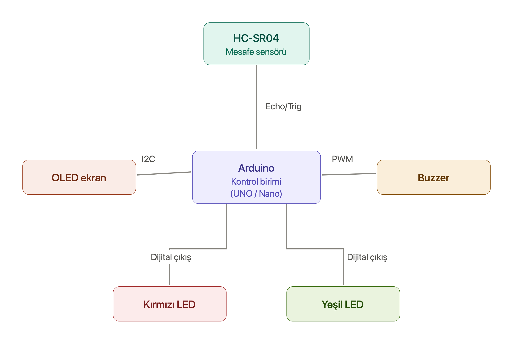
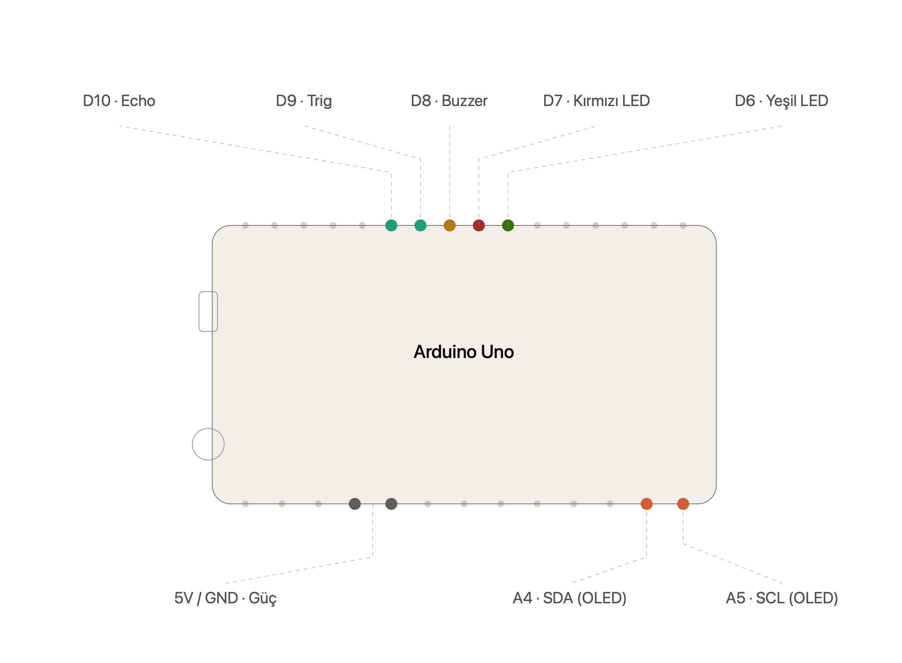

Bu proje, ARDUİNO UNO üzerinden yapılmış ,sensör verisini işleyerek görsel bir arayüz (0.96 OLED ekran) üzerinden anlık mesafe bilgisi sunan ve eşik değerine göre alarm veren bir mesafe ölçme sistemidir.
#include
#include
#include
#define ekran_genislik 128
#define ekran_yukseklik 64
#define ekran_reset -1
Adafruit_SSD1306 display(ekran_genislik, ekran_yukseklik, &Wire, ekran_reset);
#define kirmizi_led 7
#define yesil_led 6
#define buzzer 8
#define trig_pin 9
#define echo_pin 10
#define mesafe_esigi 30
#define tolerans 250
long mesafe_olc(){
digitalWrite(trig_pin, LOW);
delayMicroseconds(2);
digitalWrite(trig_pin, HIGH);
delayMicroseconds(10);
digitalWrite(trig_pin, LOW);
long sure = pulseIn(echo_pin, HIGH, 30000);
return (sure * 0.034) / 2;
}
bool alarm_aktif = false;
unsigned long son_tarama = 0;
void setup() {
pinMode(kirmizi_led, OUTPUT);
pinMode(yesil_led, OUTPUT);
pinMode(buzzer, OUTPUT);
pinMode(echo_pin, INPUT);
pinMode(trig_pin, OUTPUT);
Serial.begin(9600);
if(!display.begin(SSD1306_SWITCHCAPVCC, 0x3C)) for(;;);
display.clearDisplay();
display.setTextColor(SSD1306_WHITE);
}
void loop() {
long mesafe = mesafe_olc();
display.clearDisplay();
int sinirli_mesafe = constrain(mesafe, 0, 180);
int bar_genisligi = (sinirli_mesafe <= 30) ? map(sinirli_mesafe, 0, 30, 122, 61) : map(sinirli_mesafe, 30, 180, 61, 0);
display.setTextSize(1);
display.setCursor(0, 5);
display.println("Mesafe:");
display.print(mesafe > 180 ? "> 180cm" : (String)mesafe + " cm");
display.drawRect(2, 52, 124, 10, SSD1306_WHITE);
display.fillRect(3, 53, bar_genisligi, 8, SSD1306_WHITE);
display.display();
if(mesafe < mesafe_esigi && mesafe >= 0){
son_tarama = millis();
if(!alarm_aktif){ alarm_aktif = true; digitalWrite(yesil_led, LOW); }
digitalWrite(kirmizi_led, HIGH);
tone(buzzer, 1000);
delay(50);
} else {
if(alarm_aktif && (millis() - son_tarama > tolerans)){
alarm_aktif = false;
digitalWrite(kirmizi_led, LOW);
digitalWrite(yesil_led, HIGH);
noTone(buzzer);
}
delay(30);
}
}